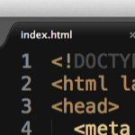
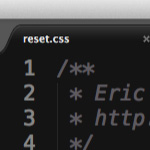
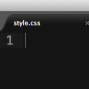

-
Создайте файл index.html
-

Подключите файл reset.css
-

Подключите файл style.css
-

Подключите PT Sans и PT Sans Caption
-

Подключите иконки Font Awesome
Практическое задание — лучший способ изучения и закрепления материала.
Для того, чтобы двигаться быстрей, необходимо иметь удобные инструменты.
Теперь откройте папку в Sublime Text и начинайте делать там проект
Когда вы всё сделаете, закиньте вашу работу на GitHub и отправьте Pull Request.
Когда ваш код окажется там, будет очень просто его комментировать и править.
Вспомните всё чему вы научились на курсе и сверстайте этот шаблон.
Наконец-то ваш проект на GitHub. Скоро вы получите комментарии по коду.